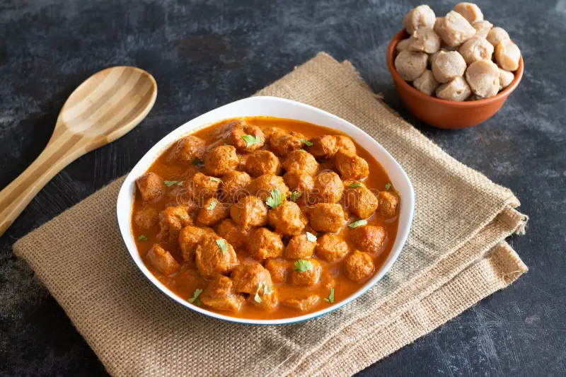

HOME
Nutri Masala

**Recipe**
This spicy, protein-packed Nutri Masala (Soya Chunks Curry) is a popular North Indian street food. Made with rehydrated soy chunks cooked in a rich, tangy onion-tomato gravy infused with robust whole and ground spices, it is best served piping hot with toasted bread, buttered pav, or kulcha.
**Ingredients**
- Soya chunks (Nutri)
- Water (for boiling)
- Salt
- 1 Tea bag (for a dark, rich color)
- Oil or Ghee
- Cumin seeds
- medium Onions, finely chopped
- Ginger-garlic paste
- medium Tomatoes, pureed
- Turmeric powder (Haldi)
- Kashmiri red chili powder
- Coriander powder (Dhaniya)
- Garam masala
- Kitchen King or Chana masala
- Kasuri methi (Dry fenugreek leaves)
**Steps**
- Boil the Soya Chunks
- Prepare the Masala Gravy
- Combine and Simmer